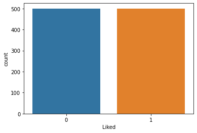

Natural Language Processing (NLP) in Python with 8 Projects - Restaurant Reviews Classification with NLTK 응용해보기
Natural Language Processing (NLP) in Python with 8 Projects 목차
- Tokenization Basics
- Stemming and Lemmatization
- Stop Words
- Vocabulary_and_Matching
- POS Tagging
- Named Entity Recognition
- Sentence Segmentation
- Spam Message Classification
- Tfidf Vectorizer
- Restaurant Reviews Classification with NLTK
- Restaurant Reviews Classification with NLTK 응용하기
- IMDB and Amazon Review Classification with SpaCy
- Text summarization
- Spam Detection with CNN
- Spam Detection with RNN
- Text Generation with TensorFlow Keras and LSTM
Restaurant_Reviews_Classification_with_NLTK 응용해보기
import numpy as np
import pandas as pd
import matplotlib.pyplot as plt
import seaborn as sns
dataset = pd.read_csv("data/Restaurant_Reviews.tsv", delimiter='\t')
dataset
| Review | Liked | |
|---|---|---|
| 0 | Wow... Loved this place. | 1 |
| 1 | Crust is not good. | 0 |
| 2 | Not tasty and the texture was just nasty. | 0 |
| 3 | Stopped by during the late May bank holiday of... | 1 |
| 4 | The selection on the menu was great and so wer... | 1 |
| ... | ... | ... |
| 995 | I think food should have flavor and texture an... | 0 |
| 996 | Appetite instantly gone. | 0 |
| 997 | Overall I was not impressed and would not go b... | 0 |
| 998 | The whole experience was underwhelming, and I ... | 0 |
| 999 | Then, as if I hadn't wasted enough of my life ... | 0 |
1000 rows × 2 columns
dataset.head()
| Review | Liked | |
|---|---|---|
| 0 | Wow... Loved this place. | 1 |
| 1 | Crust is not good. | 0 |
| 2 | Not tasty and the texture was just nasty. | 0 |
| 3 | Stopped by during the late May bank holiday of... | 1 |
| 4 | The selection on the menu was great and so wer... | 1 |
dataset.describe()
| Liked | |
|---|---|
| count | 1000.00000 |
| mean | 0.50000 |
| std | 0.50025 |
| min | 0.00000 |
| 25% | 0.00000 |
| 50% | 0.50000 |
| 75% | 1.00000 |
| max | 1.00000 |
dataset.info() # dataframe 확인 하기
<class 'pandas.core.frame.DataFrame'>
RangeIndex: 1000 entries, 0 to 999
Data columns (total 2 columns):
# Column Non-Null Count Dtype
--- ------ -------------- -----
0 Review 1000 non-null object
1 Liked 1000 non-null int64
dtypes: int64(1), object(1)
memory usage: 15.8+ KB
Checking for null values
dataset.isnull().sum()
Review 0
Liked 0
dtype: int64
sns.countplot(x = dataset['Liked'],data= dataset)
<AxesSubplot:xlabel='Liked', ylabel='count'>

dataset[dataset['Liked']==1]['Liked'].count()
500
dataset[dataset['Liked']==0]['Liked'].count()
500
from nltk.corpus import stopwords
from nltk.stem.snowball import SnowballStemmer
import re
Data Preprocessing
stemmer = SnowballStemmer('english')
corpus = []
for i in range(0,1000):
review = re.sub('[^a-zA-Z]',' ',dataset['Review'][i])
review = review.lower()
review = review.split()
review = [stemmer.stem(word) for word in review if word not in set(stopwords.words('english'))]
review = ' '.join(review)
corpus.append(review)
corpus[1] # is , not 불용어 제거됨
'crust good'
len(corpus)
1000
corpus[999]
'wast enough life pour salt wound draw time took bring check'
Creating Bag of Words Model
from sklearn.feature_extraction.text import CountVectorizer
cv = CountVectorizer(max_features=1500)
x = cv.fit_transform(corpus).toarray()
x.shape
(1000, 1500)
y =dataset['Liked'].values
from sklearn.model_selection import train_test_split
x_train,x_test,y_train,y_test = train_test_split(x,y,test_size=0.2,random_state=17)
Naive Baye’s Classifier(MultinomialNB)
from sklearn.naive_bayes import MultinomialNB
classifier = MultinomialNB()
Training the classifier
classifier.fit(x_train,y_train)
MultinomialNB()
making Predictions
y_pred = classifier.predict(x_test)
y_train_pred = classifier.predict(x_train)
Evaluating the classifier
from sklearn.metrics import classification_report,confusion_matrix,accuracy_score
print(classification_report(y_test,y_pred))
precision recall f1-score support
0 0.74 0.77 0.75 95
1 0.78 0.75 0.77 105
accuracy 0.76 200
macro avg 0.76 0.76 0.76 200
weighted avg 0.76 0.76 0.76 200
#https://www.kaggle.com/satheeshrsm/restaurant-review-classification/notebook